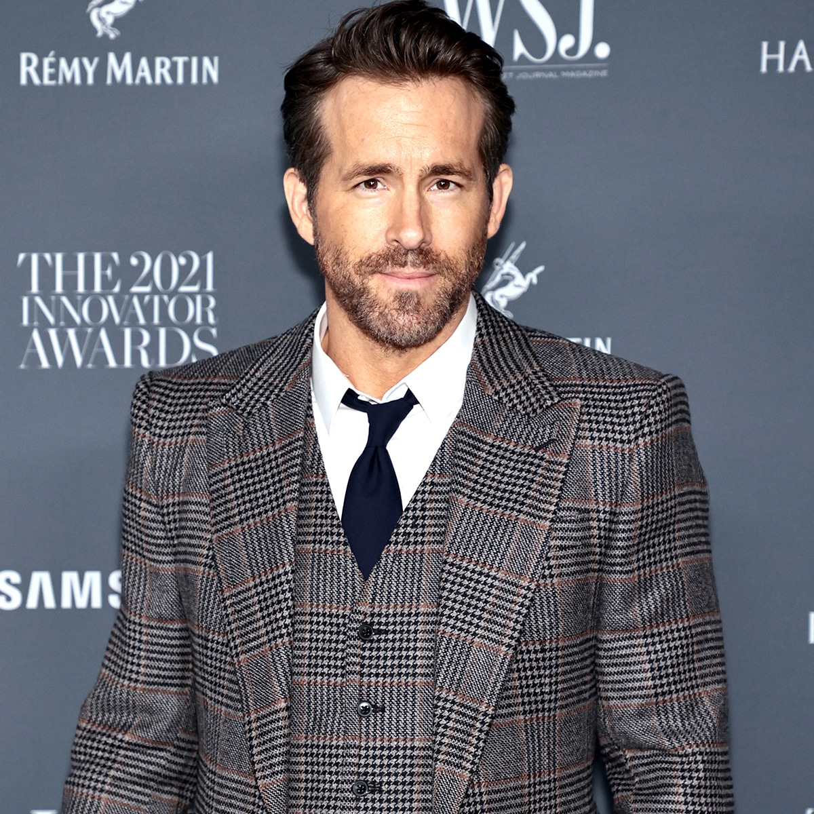

Personagens fictícios interpretados por Ryan Reynolds
Ryan Reynolds é um ator e produtor canadense que ficou mais conhecido após seu papel como Wade Wilson, em Deadpool e Deadpool 2. Porém o ator ja havia interpretado o mesmo personagem em outra franquia. Isso mesmo, na saga de filmes da 20th Century Studios "X-Men", no filme "X-Men Origins: Wolverine", o ator havia feito o mesmo papel de Wade Wilson/Deadpool, porém em uma versão "não tão tradicional" do anti-herói . Mas você sabia que além desse personagem , o ator ja interpretou outros até mesmo de editoras concorrentes? Vejamos os personagens fictícios que o ator ja viveu na lista abaixo.
- Wade Wilson : Deadpool/Deadpool 2
- Wade Wilson: X-Men Origins: Wolverine
- Hal Jordan: Lanterna Verde
- Pikachu: Pokémon: Detetive Pikachu